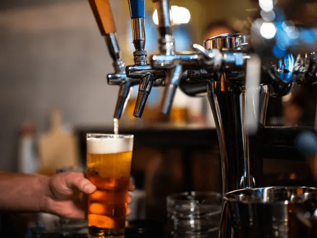
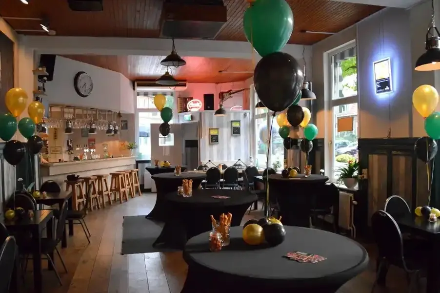
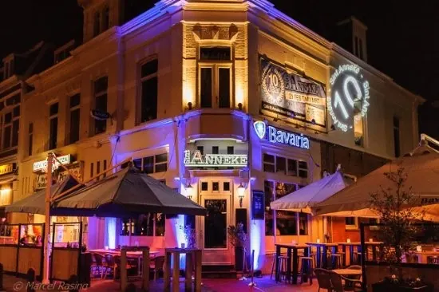
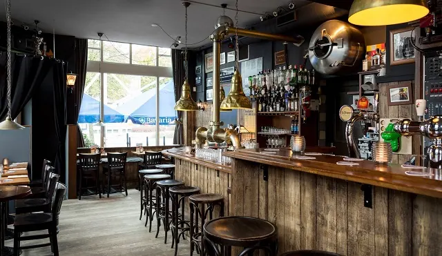

De 7 gezelligste cafés buiten het centrum van Nijmegen
Gepubliceerd op 20 december 2022, bijgewerkt op 20 februari 2024
Onderdeel van de gids Cafés in Nijmegen

Rondom Nijmegen kan je prachtige wandeling maken, door de veel nog oude wijken van de stad. Hoe lekker is het om tijdens je wandeling neer te strijken in een van de gezellige cafés. We hebben de cafés die een tussenstop waard zijn voor je op een rijtje gezet.

Waar zitten de gezelligste cafés van Nijmegen? Ook buiten het centrum
1. Café Maxim
Café Maxim wordt gezien als de huiskamer van Bottendaal. De nieuwe, jonge eigenaren Kris Gerrits en Femke Albers hebben de vertrouwde sfeer van Maxim weten te behouden. Ze hebben eigenlijk alleen maar meer toegevoegd. Zo is er bijvoorbeeld een keuken gerealiseerd, waaruit ze royale hapjes serveren.
Café Maxim is de plek om heerlijk in de zon te zitten, te genieten van de uitgebreide bierkaart en de vertrouwde glimlach van het personeel. Wil je meer weten over de bijzondere bierkaart van Maxim? Lees dan onze blog: De 8 beste biercafés van Nijmegen.
2. Café de Kroon
Café de Kroon swingt. Elke zondag wordt hier gedanst. Ze organiseren graag evenementen met andere kroegen in de wijk: Nijmegen-Oost. In de zomer zit je hier perfect in de zon, de hele dag. Op de koude dagen, is het geen straf om binnen te zitten in de huiskamer van Oost.
Café de Kroon is nooit gesloten. Ze zijn echt elke dag open. Altijd. Gelukkig maar, want ze hebben ontelbaar veel soorten bier. Je kunt er feestjes geven, zelfs trouwen. En ze zijn er gek op jazzmuziek, jij ook?

3. De Driesprong
Café de Driesprong is een biljartcafé. Sinds 2017 kent het pand nieuwe eigenaren, maar de geschiedenis van het pandje op de hoek van de Koninginnelaan gaat verder terug, en dient al 100 jaar als (buurt)café. Het gave aan de Driesprong is, dat zij zich kunnen aanpassen aan het moment van de dag en de gasten. Zo kan het biljart met een speciale lift de vloer in, om ruimte te maken voor andere activiteiten. Toen wij de eigenaar spraken zei hij: ’als het gezellig wordt dan zet ik zo een draaitafel neer en de discolampen hangen er altijd’.

4. St. Anneke
Heb je zin in gezelligheid? Café Anneke is van alle markten thuis. Hier kan je neerstrijken voor een lekkere lunch, een goede borrel of een goede burger. Je wordt bij Anneke geholpen door een team met passie voor gastronomie, gastvrijheid en gezelligheid.
Het pand van St. Anneke ligt op de hoek van de Fransestraat. Het is een ware eye-catcher, dus niet te missen.


5. Café Jos
Café Jos heeft lang op nummer 1 gestaan in de café top 100 van Nederland, de moeite waard dus. Niet alleen kan je hier genieten van een uitgebreid bierassortiment, maar ze hebben ook 14 koffievariaties en 19 soorten thee. Café Jos omschrijft zichzelf als een bruin buurtcafé met extra aandacht voor kwaliteit. En dat beleef je zeker.
Wil je meer weten over de bieren en mogelijkheden bij café Jos, lees dan ‘De 8 beste biercafés van Nijmegen’.


6. Proeflokaal Beij Ons
Beij Ons is de ontmoetingsplek voor iedereen uit- en buiten Nijmegen-Oost. Al tien jaar lang is dit de plek voor een goede kop koffie, een lunch, wijntje of speciaal biertje met een ouderwets bord vol spare-ribs. Elke dinsdagavond mag je Beij Ons aanschuiven voor de Pub quiz.
7. Buuv.
Het ondernemers stel Alwin en Ellen gingen in 2020 hun droom achterna door nieuw leven te blazen in het prachtige pand aan de Hazenkampseweg tegenover de Goffert in Nijmegen. Een bijzondere plek, waar je vaak kan meegenieten met de concerten die in het Goffertpark de hele zomer plaatsvinden.
BUUV. staat voor genieten met een grote G. Dit kan op het zonnige terras, waar je in de winter ook warmpjes kan zitten. Je kunt ook een lekkere picknick meekrijgen om mee te nemen naar het park, een ijsje halen, of een ontbijtje in het weekend met de kids.
Leuke weetjes
- De 6 gezelligste eetcafes in Nijmegen
- De 8 beste biercafes van nijmegen
- De 7 cafes met de meeste historie in Nijmegen
- Ga naar ons thema pagina Cafés in Nijmegen